Steel Tide: to review
Version 242, 11-22 12:06 AM. NEW: the Forge is built (in review). Pick a results screen and a convoy direction. Live tonight: elevator lights (M411), hulk lamps and Barrage damage (M412), clone shock (M413). Newest first. Total 27.1 MB.
The Forge: a crafting station in the hangar in review
Updated 11-22 3:55 AM ET · captured from lane build (Codex), not live yet
What changed: The Forge you approved on Nov 18 now exists: a station in the hangar you walk up to, and one Forge screen with crafting, weapon upgrades, suit cores, calibrations and the materials exchange. The station body is a stand-in bench built from hangar pieces, not a final model.
Where to look: Picture 1: the station in the hangar (the bench with the yellow marker). Pictures 2 to 4: the Forge screen on Craft, Weapons and Exchange. Planner note: some small text on the craft panel is hard to read, and the stat numbers there go away with your bars-only change.
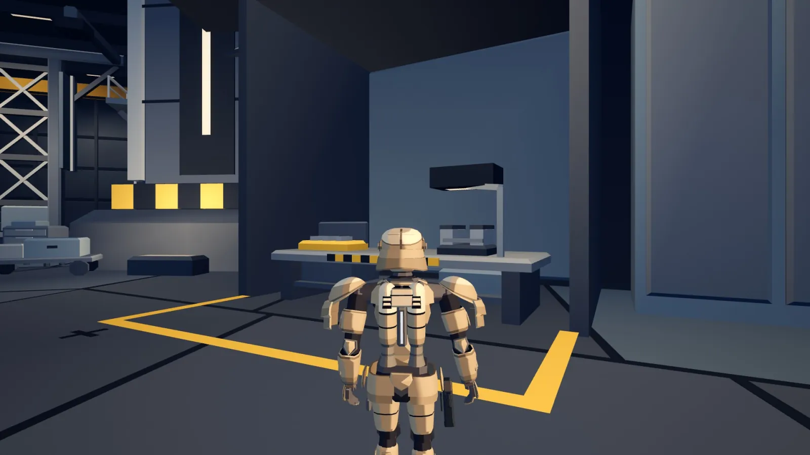
Click the image for full screen, click again for full size.
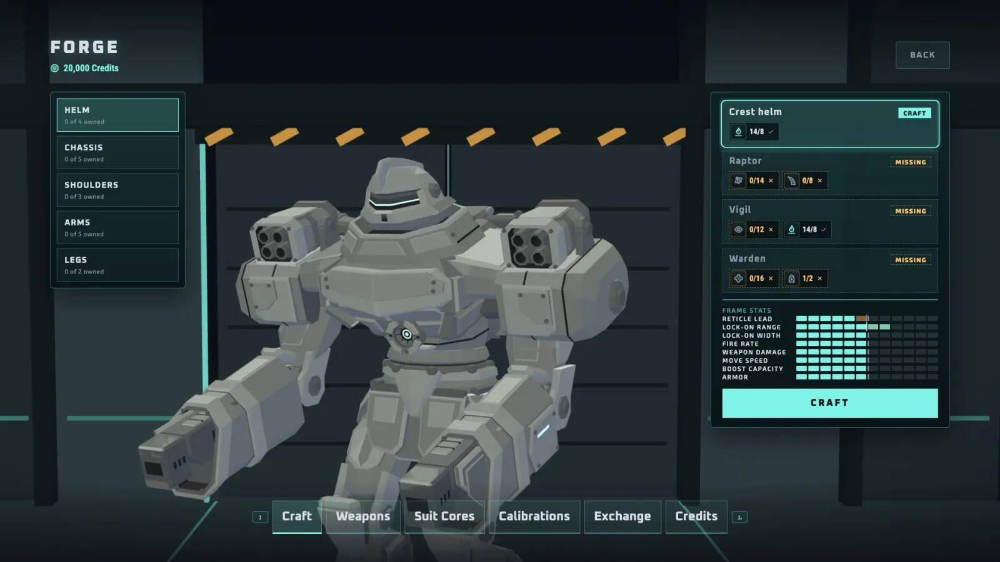
Click the image for full screen, click again for full size.
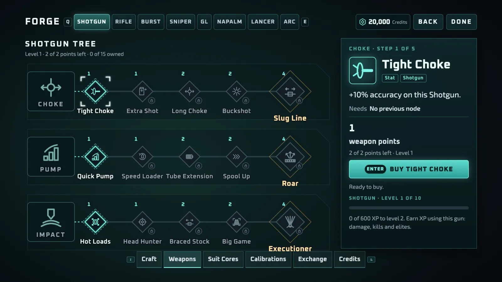
Click the image for full screen, click again for full size.
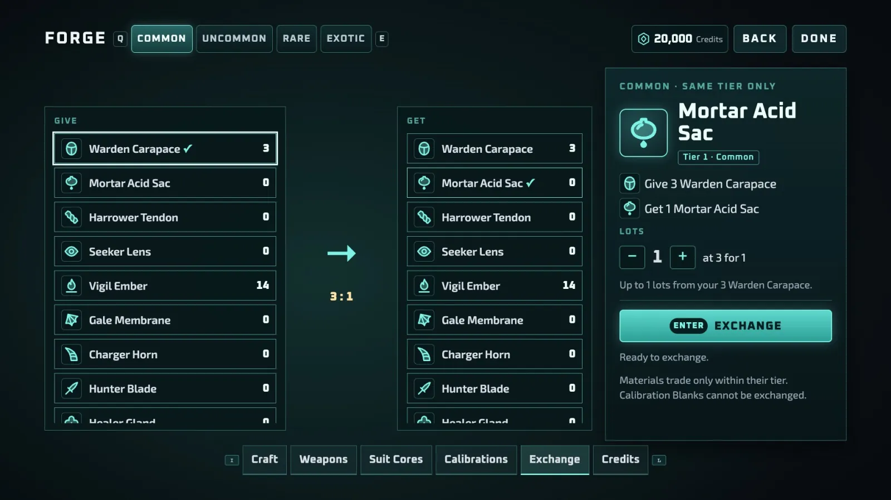
Click the image for full screen, click again for full size.
NEEDS YOUR PICK: results screen, four one-column directions needs your decision
Updated 11-22 3:05 AM ET · captured from mockups, not in the game
What changed: Four new directions for the results screen, each one column, in the game's own fonts and colors over a frame of the live ending. The Play of the game and Replay tabs are gone. No new words: only text the screen shows today.
Where to look: First picture: all four side by side (A top left, B top right, C bottom left, D bottom right). Then each one full size. The pilot figure is a stand-in used twice; the real screen draws each player's own pilot. Pick one, or mix parts (for example the layout of B with the stamp of D).
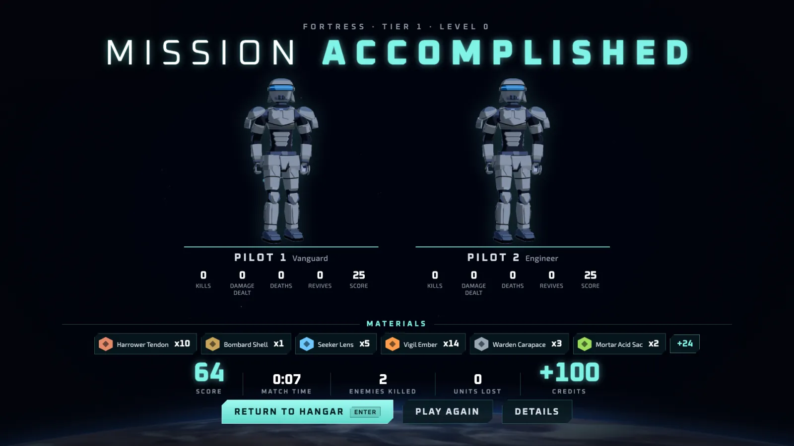
Click the image for full screen, click again for full size.
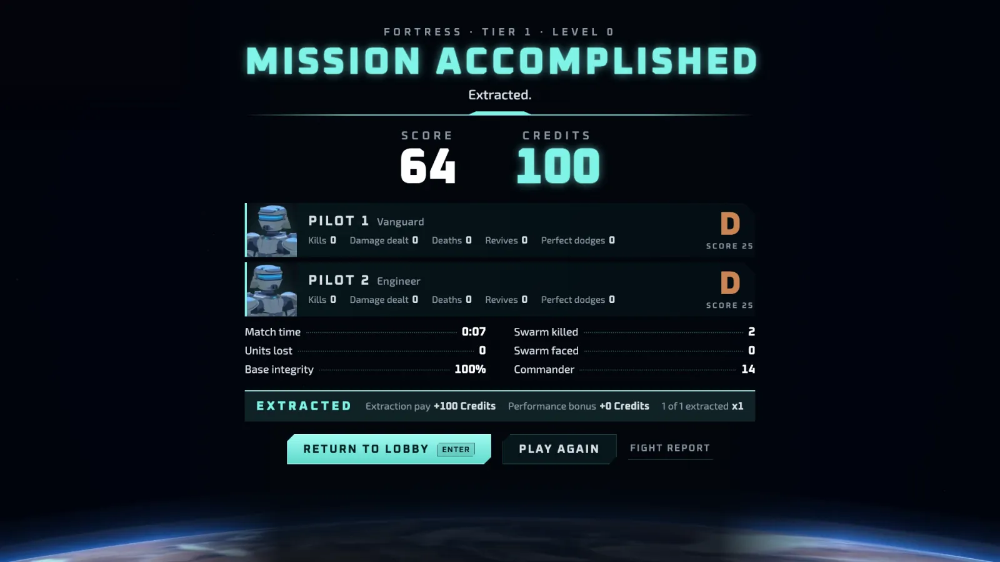
Click the image for full screen, click again for full size.
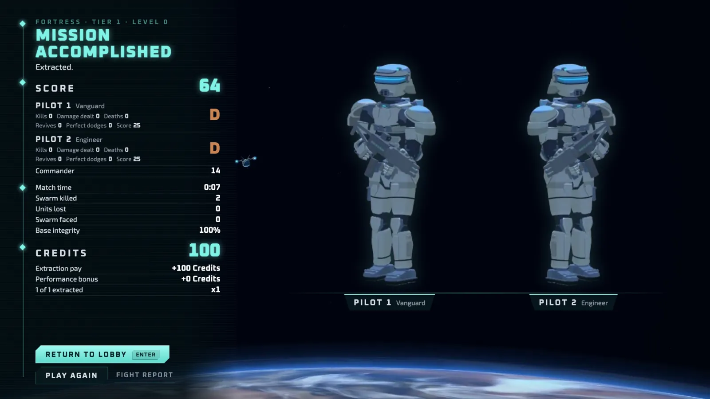
Click the image for full screen, click again for full size.
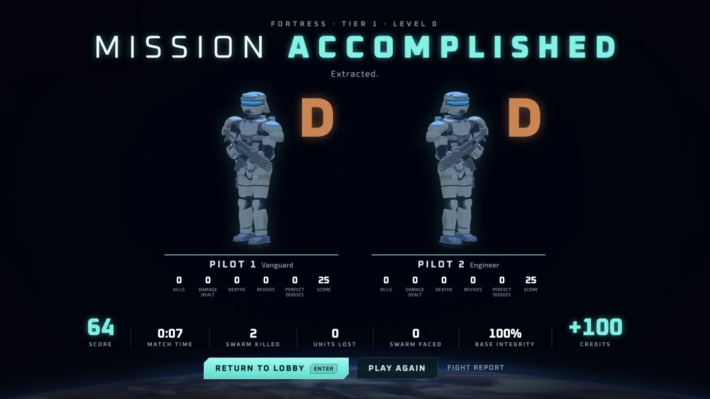
Click the image for full screen, click again for full size.
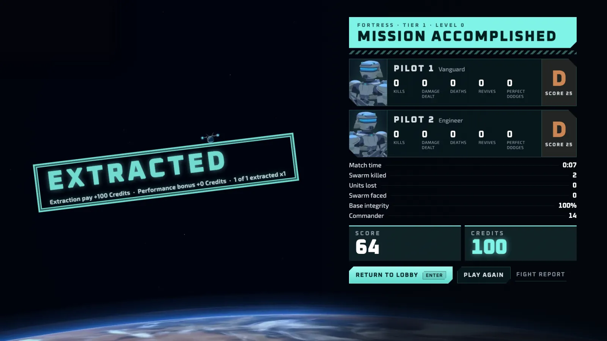
Click the image for full screen, click again for full size.
NEEDS YOUR PICK: the escort convoy, four directions needs your decision
Updated 11-22 1:30 AM ET · captured from mockups (Codex Astra), not in the game
What changed: First look at the convoy you escort: four different directions, each on the live desert with the mech and a pilot for scale. These are directions only, not final models.
Where to look: Left to right: a tracked crawler, a tractor pulling tank cars, a four-legged walker carrying a pod, a hover barge. Pick the one to build (or mix parts: say which).
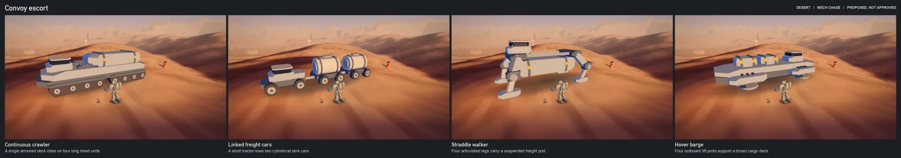
Click the image for full screen, click again for full size.
Elevator lights light the Petrel as it rises live M411
Updated 11-22 12:40 AM ET · captured from live M411 (lane build 8a857505c8, round 3)
What changed: Now live. The ship no longer goes black in the lift shaft: the shaft lamps light its own paint as it rises and the hangar light fades in. Stills only so far; the clip of the ride is being exported.
Where to look: Bottom row, left (before) against right (after): the hull in the dark shaft. Before it is nearly black; after you can read the panels, vents and engine.
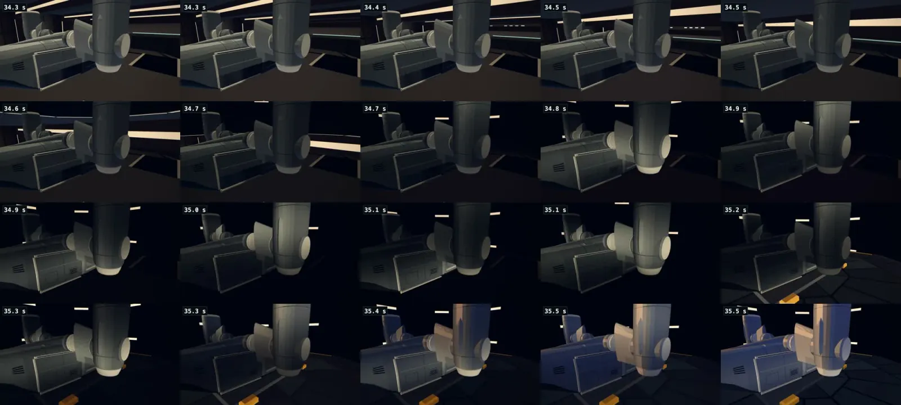
Click the image for full screen, click again for full size.
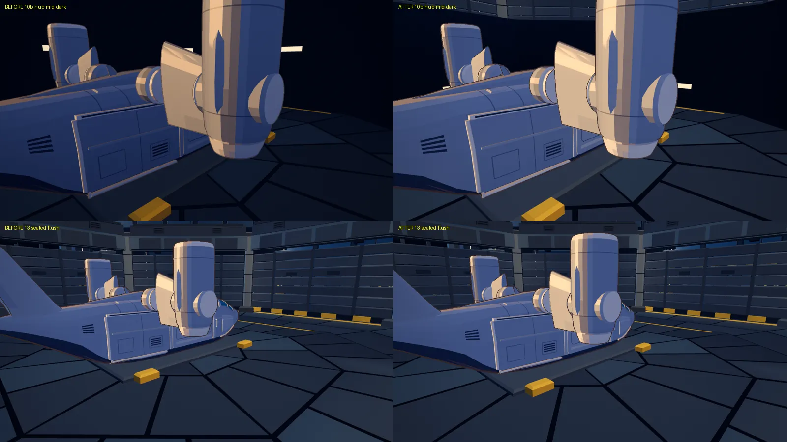
Click the image for full screen, click again for full size.
Mech jet flames match your visor color in review
Updated 11-22 12:35 AM ET · captured from lane build 5ea84c3056 (round 2)
What changed: The mech jet flames, wake and sparks now take the visor color of your mech (red, yellow and ice blue shown). The body paint change from round 1 is undone. Not live yet: one test still needs updating.
Where to look: Each column is one color pick: compare the thin visor line on the head with the flame color under the back.
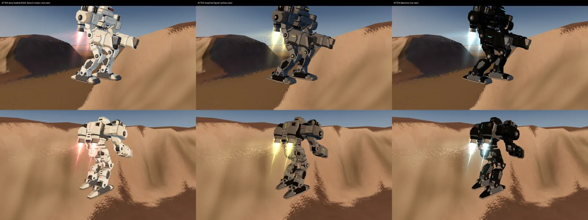
Click the image for full screen, click again for full size.
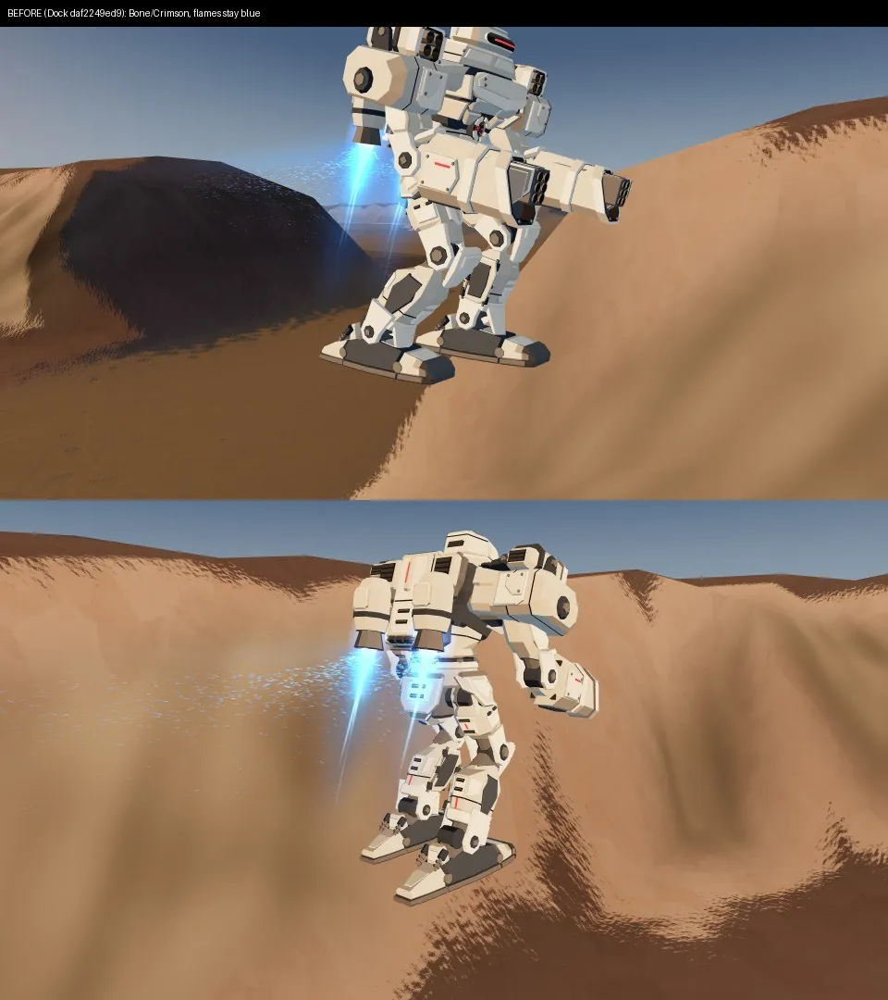
Click the image for full screen, click again for full size.
Desert floor: a subtle rolling curve in review
Updated 11-22 12:30 AM ET · captured from lane build 7797815e19
What changed: The open desert floor now rolls gently instead of lying perfectly flat. Bases, outposts and turret pads stay flat. Planner note: from this high camera the curve is hard to see; it should show more at pilot height. A setting under World > Desert floor roll makes it stronger.
Where to look: First picture is the new floor, second is live. Look at the middle distance between the bone arches and the dish tower: the ground rises and dips slightly in the first.
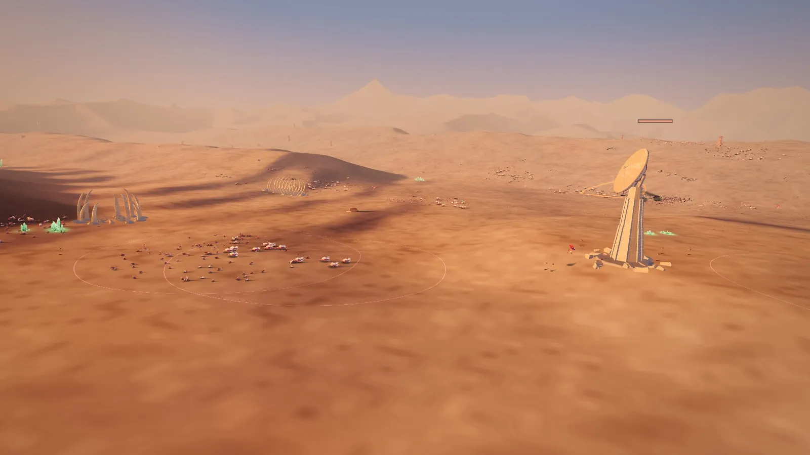
Click the image for full screen, click again for full size.
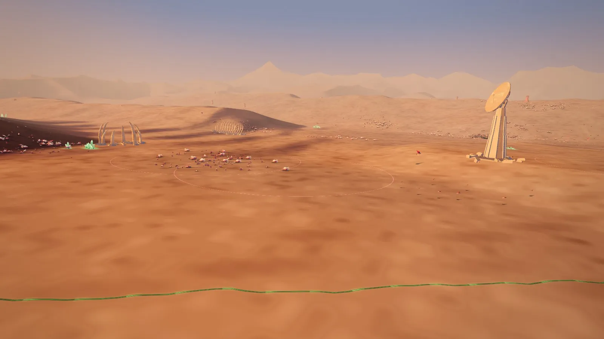
Click the image for full screen, click again for full size.
Weapon icons: style A in the game live M394
Updated 11-21 10:10 PM ET · captured from real HUD strip and Loadout screens at 1080p, before and after
What changed: Style A (Stencil) icons replace the old ones for all 12 weapons plus the Hand Cannons (new twin-barrel fist icon): HUD weapon strip, Loadout bar, mech weapon picker. Only the glyphs changed.
Where to look: Three rows, BEFORE (Dock) on the left and AFTER on the right: the HUD weapon strip, the Loadout Primary and Heavy cards, and the mech weapon picker with Hand Cannons.
Click the image for full screen, click again for full size.
Pilot: carried gun and arms no longer cut into the body (before / after) live M391
Updated 11-21 10:05 PM ET · captured from lane build 5c9a221f8b (hardware GL stills: Engineer with the Trellis model switch on, side and 3/4 behind, the Assault 3/4, and the base pilot's held-W ground dash; BEFORE = the live build)
What changed: Live since M391: carried gun and arms clear the body on walk and run for every class.
Where to look: BEFORE on top, AFTER below in every row. Engineer side view: the gun sat inside the hip before, now it rides clear in front with the hand on the grip. Bottom row: the base pilot mid held-W dash looks the same before and after.
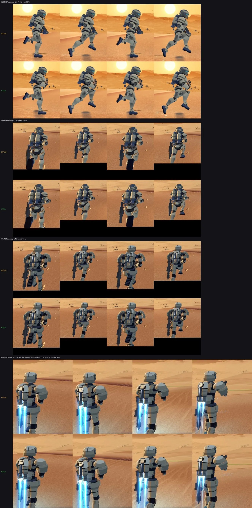
Click the image for full screen, click again for full size.
Only your Petrel in the hangar live M408
Updated 11-21 9:40 PM ET · captured from lane build a4f349cd12 vs Dock d952774928
What changed: The two small parked Petrels and their landing pads are removed; only the ship you arrive in remains.
Where to look: Top (BEFORE): two small Petrels left and right of the center. Bottom (AFTER): those spots are empty floor.
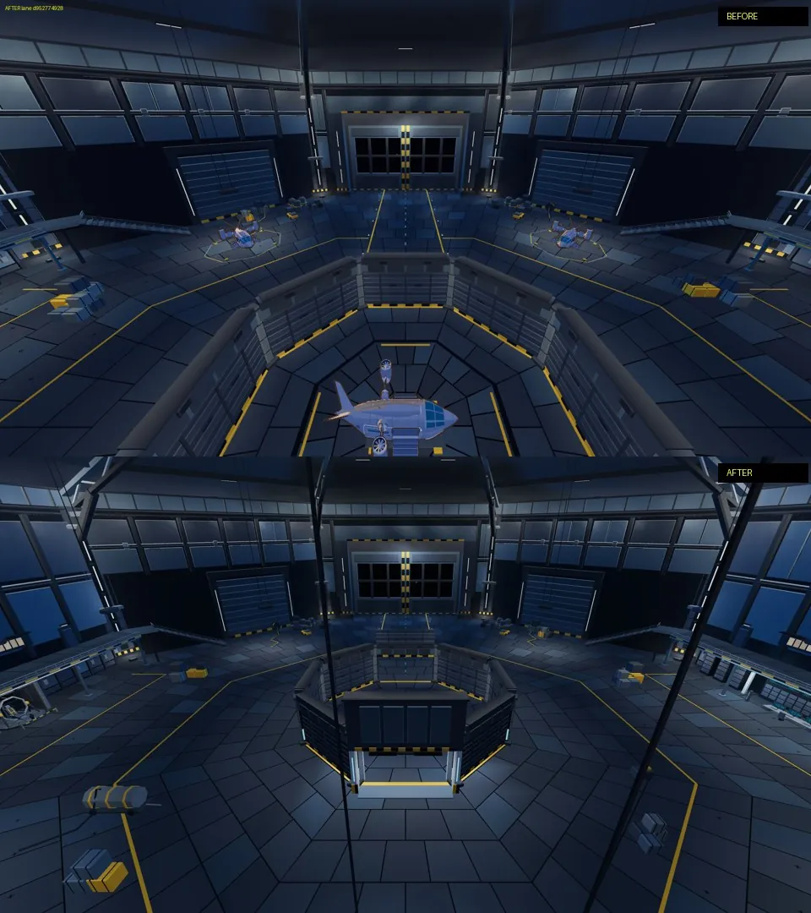
Click the image for full screen, click again for full size.
Hangar mech stands on its cradle live M405
Updated 11-21 8:37 PM ET · captured from lane build 0ad2d47e5c vs Dock
What changed: The cradle blocks moved under the soles, so both boots sit on top instead of sinking in.
Where to look: Left (BEFORE): boots cut by the grey blocks. Right (AFTER): boots on top of the blocks.
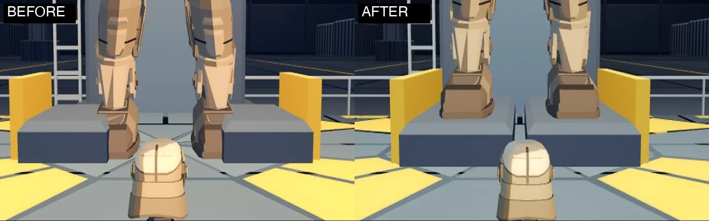
Click the image for full screen, click again for full size.
Docking: camera, Petrel glide and lift light live M406
Updated 11-21 8:37 PM ET · captured from viewer export of lane build c541c7decd
What changed: The camera turns the short way round the Petrel (75 degrees, was a full circle), the Petrel glides onto the pad in one move, and the lift light fades in.
Where to look: 26-37 s: entry and set-down. 37-40 s: lift ride; the dark-to-hangar change at 38-39 s is the part to judge.
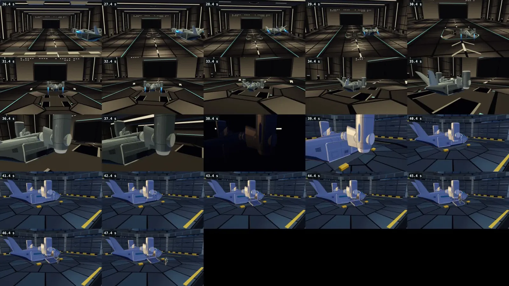
Click the image for full screen, click again for full size.
Pause the video at any moment to write a note for that second.
Desert: our sand under yesterday's sky live M404
Updated 11-21 8:37 PM ET · captured from lane build 4d705dd76c (on top of live M402)
What changed: Our own round-20 sand on the ground near you, with yesterday's sun, sky, horizon and haze; the repo port is off.
Where to look: Left: live M402 (yesterday's whole desert). Right: our sand on the near ground; the sky and horizon should match the left exactly.
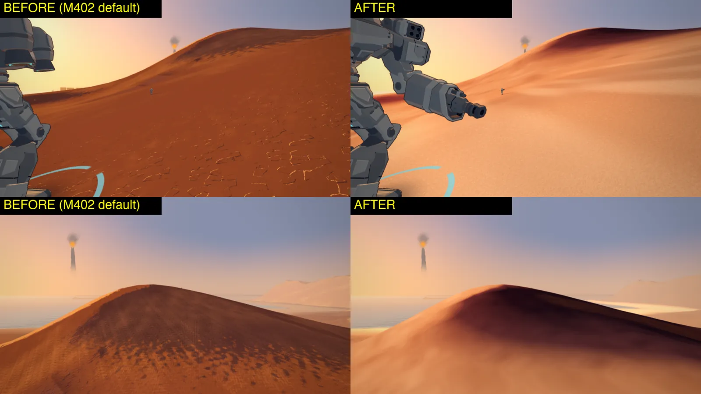
Click the image for full screen, click again for full size.
Extraction ending, full outro (live build) live M398
Updated 11-21 6:35 PM ET · captured from viewer export of lane/DOCK-LIFT-CAMERA-1121 (same camera code as live M398)
What changed: Live now (M398): one smooth camera sweep from docking into the lift, no pause or swing back; the lift starts about 2 s after docking.
Where to look: 13 s results; about 30 s the Petrel docks and the camera keeps turning the same way round it; about 32-35 s the lift starts while the camera eases onto the ride view; 35 s on, the station arrival.
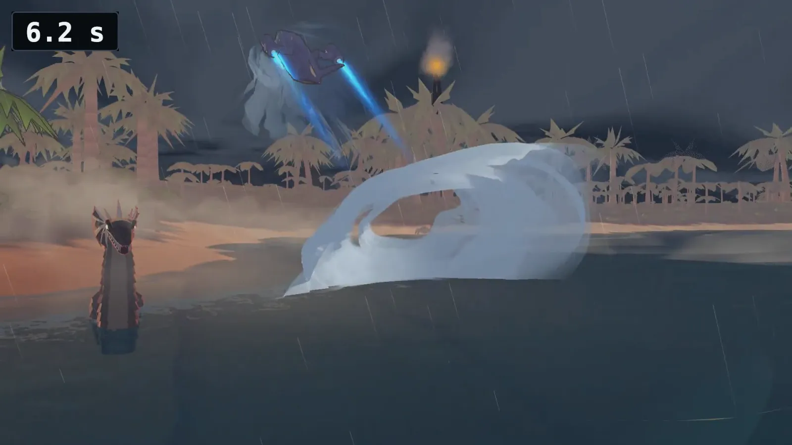
Click the image for full screen, click again for full size.
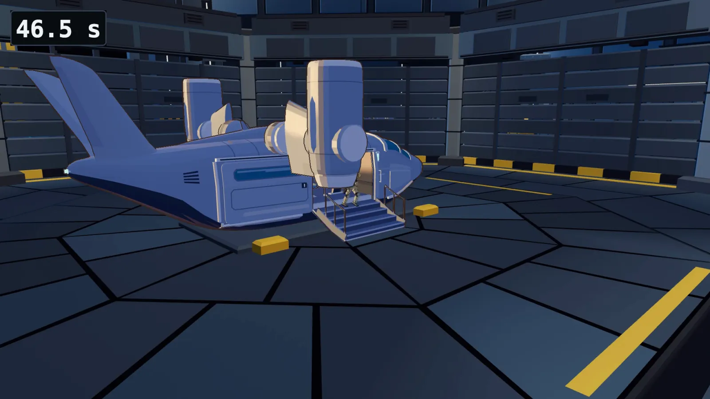
Click the image for full screen, click again for full size.
Pause the video at any moment to write a note for that second.
Mission start: no black screen before the flight live M385
Updated 11-21 5:05 PM ET · captured from lane build 0246fd1d88 (viewer export, Launch sequence row, filmed from Deploy; the export timing check flagged a few repeated frames under load) + page captures of the real Mission Control start (BEFORE = Dock, AFTER = this build)
What changed: After Deploy the ship flying through the stars shows at once. The black 'Preparing the drop' screen (about 2 s) is gone: 2 frames now. The match HUD no longer shows over the flight.
Where to look: Still: top row BEFORE, bottom row AFTER, every 0.3 s from the pod drop; from 5.5 s the top row is black, the bottom row is the flight. Video from 0.0 s: the flight is the first frame after Deploy, the planet comes in at 3.2 s, the approach at 11 s.

Click the image for full screen, click again for full size.
Pause the video at any moment to write a note for that second.
Desert: shots, landings and footsteps throw up sand live M396
Updated 11-21 4:55 PM ET · captured from lane build 210f87d4bb (viewer export, Mech on sand row, mech play camera; ON vs OFF = the same row with the sand switch off)
What changed: Live now: tan sand puffs from shots, footsteps and landings, and a big tan burst when the mech lands.
Where to look: Sheet: ON on top, OFF below, at 3.9 s, 5.6 s and 6.6 s. At the landing (6.6 s) ON is a tan billowing sand burst, OFF is dark smoke. The dark column at lift-off (5.6 s) is the jet smoke and is the same OFF. The old stacked slabs were a bug (puffs lost their seed) and are fixed.
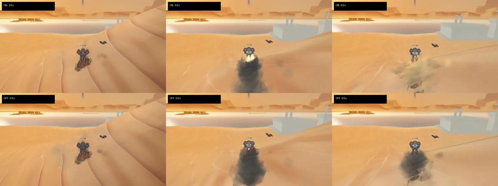
Click the image for full screen, click again for full size.
Pause the video at any moment to write a note for that second.
The open-source dune scene we are porting, as it looks in its own demo needs your decision
Updated 11-21 4:42 PM ET · captured from the repo's own hosted demo (keaukraine webgl-dunes), daytime light, real GPU
What changed: New: this is the repo's sand on its own, before any port into our game.
Where to look: The fine wind ripples in the foreground, the soft rolling dunes, and the long shadow pools. The clip is a 6 s camera pass.
The straight port into our desert is being built now, using the repo's sunset light to match our low sun. It will land here next to this, with nothing of ours added. Say if this is the look you want before it lands.
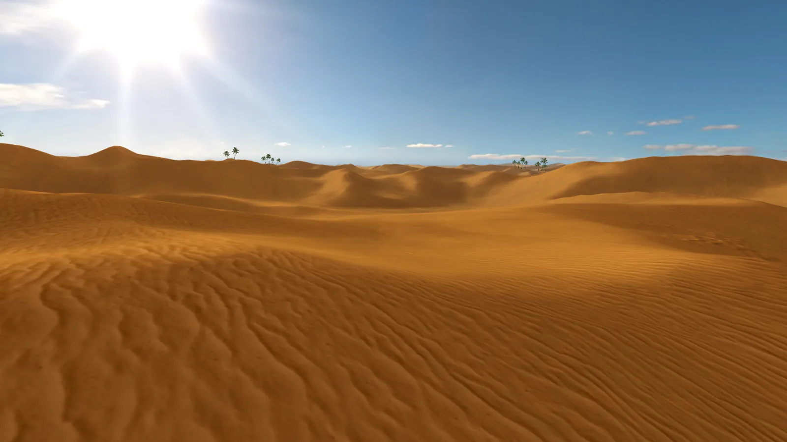
Click the image for full screen, click again for full size.
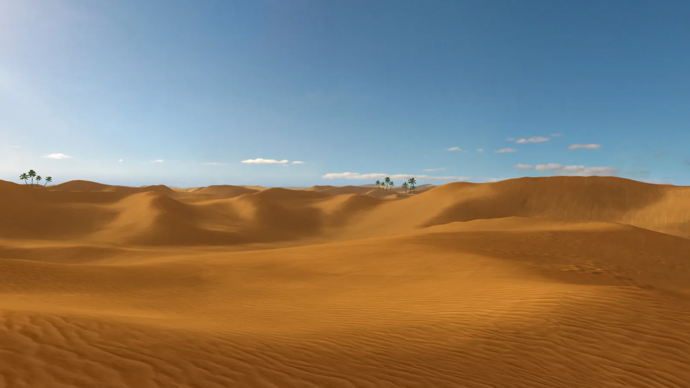
Click the image for full screen, click again for full size.
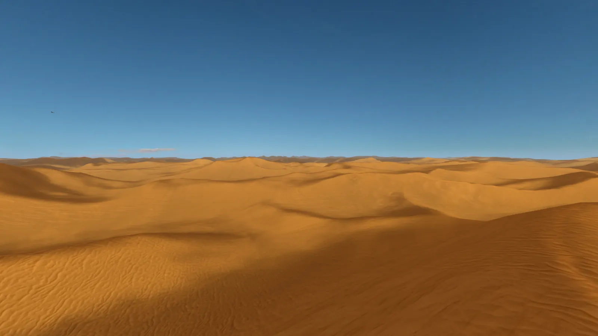
Click the image for full screen, click again for full size.
Pause the video at any moment to write a note for that second.
Old roll and floor dashes removed live M384
Updated 11-21 2:53 PM ET · captured from lane build 85e740eb79
What changed: The Settings switch for the old ground roll is gone (the jet dash is the only ground dodge), and the two rows of teal dashes on the hangar floor are removed.
Where to look: Bottom half: the hangar floor in front of the pilot is clean where the teal dashes were. In Settings > Gameplay there is no Ground dodge row.
Click the image for full screen, click again for full size.
Unit ground shadows back on live M377 (not seen: switch Settings > Graphics "Unit ground shadows")
Updated 11-21 1:02 PM ET · captured from lane build a88e113835
What changed: Every unit casts its ground shadow again, following it every frame and leaning away from the map sun; about 0.2 ms GPU with 4,600 enemies.
Where to look: BEFORE top / AFTER bottom; the crowd is far off at this camera, so look at the shadows under the nearest units.

Click the image for full screen, click again for full size.
Pilot walk: half the side-to-side sway (before / after) live M375
Updated 11-21 12:44 PM ET · captured from lane build 6c76392f99 (viewer export, pilot:gait; failed the export timing check under load, a few repeated frames)
What changed: The pilot's side-to-side hip sway while walking is cut to half (0.028 to 0.014). Nothing else changed.
Where to look: Left is BEFORE, right is AFTER, same row and camera behind the walking pilot; the hips and shoulders drift less from side to side.

Click the image for full screen, click again for full size.
Pause the video at any moment to write a note for that second.
Your 8:00 PM report: which part of the boss looked wrong? needs your decision
Updated 11-20 10:51 PM ET · captured from your own report screenshot, build M322
What changed: Nothing changed. The job found no fault in the drawing code, so it needs you to point at the part.
Where to look: The boss is in the middle, seen from above with its jaws open. Was it (1) the two flat bright green patches in the mouth, (2) the ring of orange speckle around the jaws, or (3) the pale blocky smears on the water to its left?
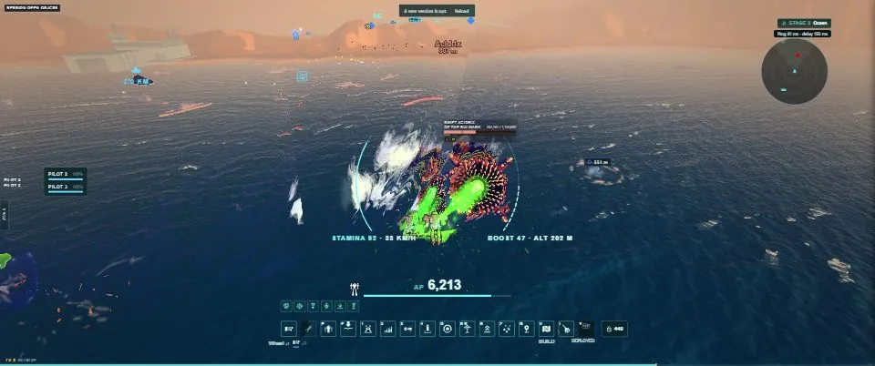
Click the image for full screen, click again for full size.
New mech: first 3D model from your sheet not seen by anyone
Updated 11-19 11:21 PM ET · captured from Trellis seed mv_s503 (desktop)
What changed: Built from your front, back and side views together; the body shape now matches your sheet.
Where to look: Bottom-left render is the back: the hatch came out as a rounded hump with no hinge, so it gets built in house. The hands are fused mitts.
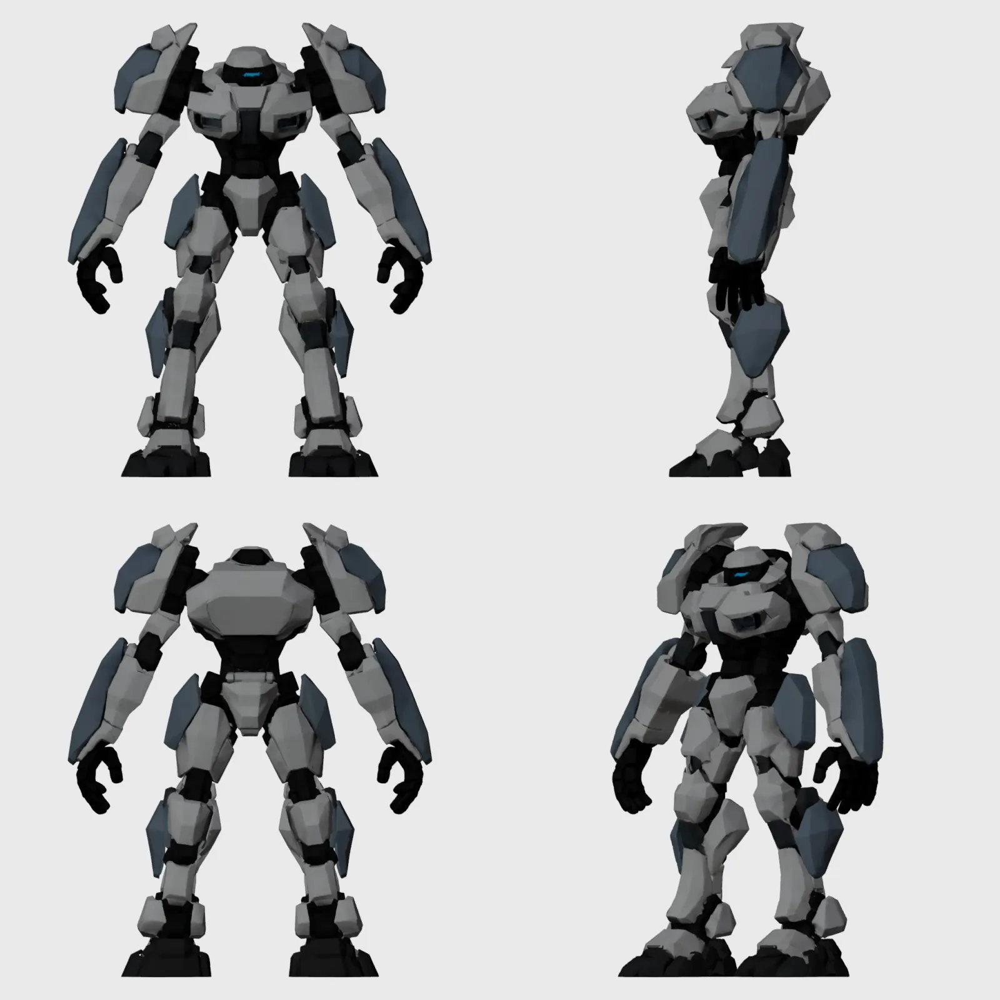
Click the image for full screen, click again for full size.

Click the image for full screen, click again for full size.
Tactician pilot: your pick, smudges cleaned (ready to wire) built, not live (cleanup done; hands passed the checks)
Updated 11-19 10:24 PM ET · captured from Blender render, clean round 3b
What changed: Smudges, belly specks and ragged colour edges cleaned; hands checked against your approved hands and passed with no change.
Where to look: Full views: ROUND 2 left, AFTER right. Tiny flecks remain only in extreme close-ups (knee ring, back spine bar).
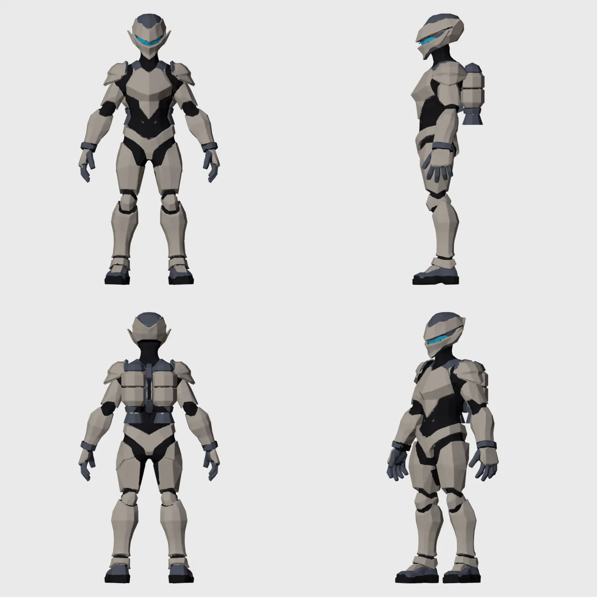
Click the image for full screen, click again for full size.
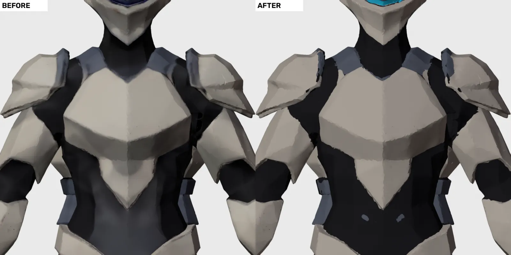
Click the image for full screen, click again for full size.
Vanguard pilot: your pick, six fingers fixed (ready to wire) built, not live (hands approved, ruling 2040)
Updated 11-19 10:24 PM ET · captured from Blender render, hands round 2
What changed: Extra finger folded in and the palm narrowed: four fingers and a thumb on each hand, matched.
Where to look: Full body BEFORE left, AFTER right.
You found six fingers on one hand. It gets the same hand fix as the Engineer before it goes further.

Click the image for full screen, click again for full size.
NEEDS YOUR PICK: the drop cannon's size on the Cradle (three sizes), with its back hidden and navy colour live M226; the Cradle is on by default since M233 (cannon pick still open)
Updated 11-18 7:43 PM ET · captured from lane build 7bb227aa5d
What changed: The cannon is now the ship's navy instead of bright white, its back is hidden in a gun bay like on the old ship, and the old ship no longer flashes at the start. Same cannon, same sequence.
Where to look: First three images: the cannon unfolded at three sizes, today's 1.4 times, then 2.5 times, then 3.5 times. In these previews the cannon stays the same size on screen and the SHIP is drawn smaller, so compare how big the cannon is against the hull above it. Then the full sheet: old ship on the left, Cradle on the right, for arrival, push, unfold, scope and launch.
Your pick: 1.4 is what ships today and everything clears. At 2.5 and 3.5 the cannon looks right for a ship this size, but its unfold swing hits the hull, so choosing either means one more round to make room for the swing. Weak points: the cannon's cyan coils and pale bands still stand out against the navy, and it does not take the hull's shadow.

Click the image for full screen, click again for full size.

Click the image for full screen, click again for full size.

Click the image for full screen, click again for full size.

Click the image for full screen, click again for full size.
NEEDS YOUR CALL: island Horde, camera zooms in when you are on foot built, not live: waiting for your call on how close
Updated 11-17 1:30 PM ET · captured from lane build, island Horde, 1920x1080; top half = the live build, bottom half = the change, same script
What changed: On foot the camera now eases in from 110 to 40 (the mech view is unchanged). The pilot goes from about 7 pixels tall to about 20. That is still small: it stops there so you can see enemies 2 seconds before they reach you.
Where to look: Clip: top is before, bottom is after. At about 4 seconds the pilot leaves the mech and the bottom view eases in; at the end he re-enters and it eases back out. Still: the same on-foot moment, before on the left, after on the right; the pilot is the small figure right of the mech.
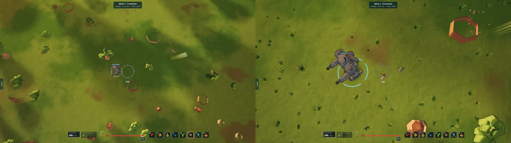
Click the image for full screen, click again for full size.
Pause the video at any moment to write a note for that second.